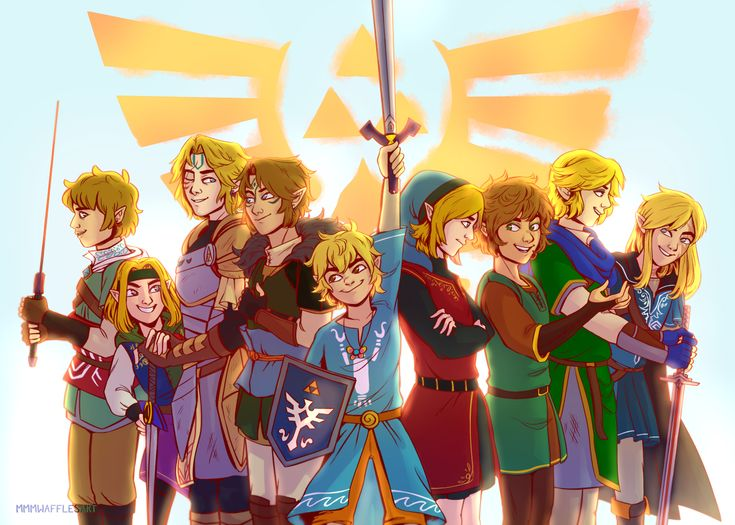

Purpose
This site allows you to search up characters based off of the comic "Linked Universe." Once you find a hero you like, you can click to open their character page, which will give a bit more information about them and allow you to battle. Once you click the battle button a random enemy specific to the character you're playing as will appear, and your character card will attack theirs with one of their special skills.
Linked Universe
A fan-made comic based off of the Legends of Zelda franchise. It condences every game and manga into 9 different heroes: Sky, Four, Time, Wind, Legend, Hyrule, Twilight, Warriors, and Wild. (The names are based off of their games or "hero titles") These heroes are pulled through time to meet up with each other and fight off suspiciously strong monsters, chasing a Dark Link through time.
Linked Universe Comic